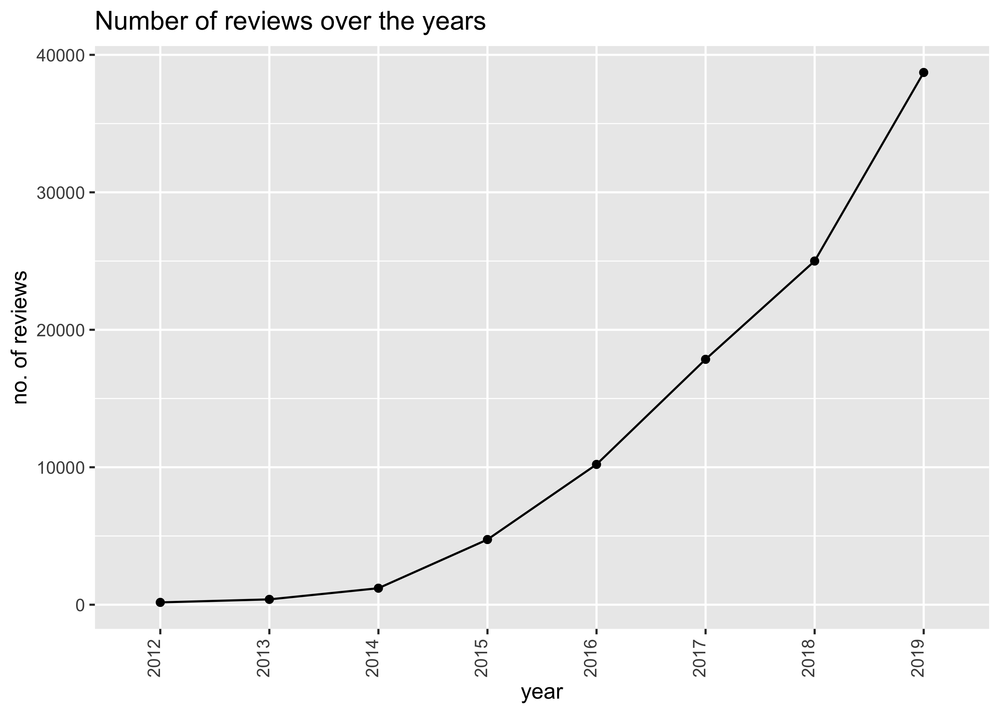

3 Exploratory Data Analysis
3.1 Setting up the data
library(tidyverse)
library(here)
library(sf)
library(skimr)
library(lubridate)
library(forcats)
library(tmap)
library(psych)
library(RColorBrewer)## Parsed with column specification:
## cols(
## .default = col_double(),
## listing_url = col_character(),
## name = col_character(),
## summary = col_character(),
## space = col_character(),
## description = col_character(),
## experiences_offered = col_character(),
## neighborhood_overview = col_character(),
## notes = col_character(),
## transit = col_character(),
## access = col_character(),
## interaction = col_character(),
## house_rules = col_character(),
## thumbnail_url = col_logical(),
## medium_url = col_logical(),
## picture_url = col_character(),
## xl_picture_url = col_logical(),
## host_url = col_character(),
## host_name = col_character(),
## host_location = col_character(),
## host_about = col_character()
## # ... with 36 more columns
## )## See spec(...) for full column specifications.## Warning: 5 parsing failures.
## row col expected actual file
## 3389 license 1/0/T/F/TRUE/FALSE 201117828H '/Users/jeancjw/Documents/SUTD/MUSPP/02.522 Urban Data & Methods II CUA/cua-jeanette-c/projdata/listings-mar20.csv'
## 4641 license 1/0/T/F/TRUE/FALSE 201537598E '/Users/jeancjw/Documents/SUTD/MUSPP/02.522 Urban Data & Methods II CUA/cua-jeanette-c/projdata/listings-mar20.csv'
## 5156 license 1/0/T/F/TRUE/FALSE 201202564R '/Users/jeancjw/Documents/SUTD/MUSPP/02.522 Urban Data & Methods II CUA/cua-jeanette-c/projdata/listings-mar20.csv'
## 6227 license 1/0/T/F/TRUE/FALSE 201537598E '/Users/jeancjw/Documents/SUTD/MUSPP/02.522 Urban Data & Methods II CUA/cua-jeanette-c/projdata/listings-mar20.csv'
## 6234 license 1/0/T/F/TRUE/FALSE 201537598E '/Users/jeancjw/Documents/SUTD/MUSPP/02.522 Urban Data & Methods II CUA/cua-jeanette-c/projdata/listings-mar20.csv'listings <- listings %>%
select(id, name, listing_url, description, host_id, host_name, host_since, host_response_time, host_response_rate, host_acceptance_rate, host_is_superhost, host_listings_count, property_type, room_type, price, minimum_nights, neighbourhood_cleansed, neighbourhood_group_cleansed, latitude, longitude, number_of_reviews, number_of_reviews_ltm, review_scores_rating, reviews_per_month)
listings <- rename(listings, planning_area = neighbourhood_cleansed, planning_region = neighbourhood_group_cleansed)
saveRDS(listings, here::here("projdata/listings.rds"))3.2 Popularity of Airbnbs
3.2.1 Number of listings over time
Data for Airbnb listings in Singapore is only available as far back as March 2019. Based on monthly listings data, we can see that the number of listings remained relatively stable, with minor seasonal “peaks” in the months of May, June and December, which are usually holiday season.
# values based on number of observations from previous months' listings
listings_time <- tribble(
~month, ~total_listings,
"mar20", 7713,
"feb20", 8047,
"jan20", 7857,
"dec19", 8000,
"nov19", 7857,
"oct19", 7794,
"sep19", 7675,
"aug19", 7907,
"jul19", 8033,
"jun19", 8293,
"may19", 8325,
"apr19", 8090,
"mar19", 7975
)
month_order <- rev(listings_time$month)
listings_time %>%
mutate(month = ordered(month, levels = month_order)) %>%
ggplot(aes(x = month, y = total_listings)) +
geom_col(color = "grey", fill = "paleturquoise3") +
geom_text(aes(label = total_listings), vjust = -0.5, size = 3) +
labs(y = "Total listings")Due to the lack of data, it is not possible to look at how the number of listings evolved since the implementation of the laws in 2017, based on the listings data. Instead, the reviews data can be used as a proxy for how popular the Airbnb platform has been over the years.
3.2.2 Number of Reviews over time
## Parsed with column specification:
## cols(
## listing_id = col_double(),
## id = col_double(),
## date = col_date(format = ""),
## reviewer_id = col_double(),
## reviewer_name = col_character(),
## comments = col_character()
## )Plotting the number of reviews for each date since May 2011 till March 2020 makes the data quite difficult to read although we can see a general upward trend.

To make things neater, we can look at the aggregated number of reviews in each year.
reviews_year <- reviews %>%
mutate(year = case_when(
date = str_detect(date, "2011") ~ "2011",
date = str_detect(date, "2012") ~ "2012",
date = str_detect(date, "2013") ~ "2013",
date = str_detect(date, "2014") ~ "2014",
date = str_detect(date, "2015") ~ "2015",
date = str_detect(date, "2016") ~ "2016",
date = str_detect(date, "2017") ~ "2017",
date = str_detect(date, "2018") ~ "2018",
date = str_detect(date, "2019") ~ "2019",
date = str_detect(date, "2020") ~ "2020"
)) %>%
group_by(year) %>%
count()
reviews_year## # A tibble: 10 x 2
## # Groups: year [10]
## year n
## <chr> <int>
## 1 2011 23
## 2 2012 169
## 3 2013 388
## 4 2014 1201
## 5 2015 4742
## 6 2016 10206
## 7 2017 17851
## 8 2018 25000
## 9 2019 38717
## 10 2020 8119reviews_year %>%
filter(year != "2011") %>%
filter(year != "2020") %>% # exclude 2020 as it's only a few months into the year, and exclude 2011 as data only beganfrom mid-year
ggplot() +
geom_line(aes(x = year, y = n, group = NA)) +
geom_point(aes(x = year, y = n)) +
theme(axis.text.x = element_text(angle = 90, vjust = 0)) +
ggtitle("Number of reviews over the years") +
labs(y = "no. of reviews") 
As can be seen in the plot above, there is a year-on-year increase in the number of reviews, which can mean (1) the number of listings has increased over the years, (2) the number of tenants per listing has increased over the years, or both. In any case, this may be an indication that the law is being flouted.
3.3 Analysis of different variables
## # A tibble: 6 x 24
## id name listing_url description host_id host_name host_since
## <dbl> <chr> <chr> <chr> <dbl> <chr> <dbl>
## 1 49091 COZI… https://ww… This is Ro… 266763 Francesca 40471
## 2 50646 Plea… https://ww… Fully furn… 227796 Sujatha 40429
## 3 56334 COZI… https://ww… This is Ro… 266763 Francesca 40471
## 4 71609 Ensu… https://ww… For 3 (Web… 367042 Belinda 40572
## 5 71896 B&B … https://ww… Vocational… 367042 Belinda 40572
## 6 71903 Room… https://ww… Like your … 367042 Belinda 40572
## # … with 17 more variables: host_response_time <chr>, host_response_rate <chr>,
## # host_acceptance_rate <chr>, host_is_superhost <lgl>,
## # host_listings_count <dbl>, property_type <chr>, room_type <chr>,
## # price <dbl>, minimum_nights <dbl>, planning_area <chr>,
## # planning_region <chr>, latitude <dbl>, longitude <dbl>,
## # number_of_reviews <dbl>, number_of_reviews_ltm <dbl>,
## # review_scores_rating <dbl>, reviews_per_month <dbl>listings <- listings %>%
mutate(
host_name = as_factor(host_name),
property_type = as_factor(property_type),
planning_area = as_factor(planning_area),
planning_region = as_factor(planning_region),
room_type = as_factor(room_type),
price = as.numeric(gsub("[\\$]", "", price))
)
listings## # A tibble: 7,713 x 24
## id name listing_url description host_id host_name host_since
## <dbl> <chr> <chr> <chr> <dbl> <fct> <dbl>
## 1 49091 "COZ… https://ww… "This is R… 266763 Francesca 40471
## 2 50646 "Ple… https://ww… "Fully fur… 227796 Sujatha 40429
## 3 56334 "COZ… https://ww… "This is R… 266763 Francesca 40471
## 4 71609 "Ens… https://ww… "For 3 (We… 367042 Belinda 40572
## 5 71896 "B&B… https://ww… "Vocationa… 367042 Belinda 40572
## 6 71903 "Roo… https://ww… "Like your… 367042 Belinda 40572
## 7 71907 "3rd… https://ww… "Vocationa… 367042 Belinda 40572
## 8 117957 "Pri… https://ww… "Private R… 448620 Lynnity 40619
## 9 241503 "Lon… https://ww… "Stay in a… 1017645 Bianca 40780
## 10 241508 "Lon… https://ww… "Stay in a… 1017645 Bianca 40780
## # … with 7,703 more rows, and 17 more variables: host_response_time <chr>,
## # host_response_rate <chr>, host_acceptance_rate <chr>,
## # host_is_superhost <lgl>, host_listings_count <dbl>, property_type <fct>,
## # room_type <fct>, price <dbl>, minimum_nights <dbl>, planning_area <fct>,
## # planning_region <fct>, latitude <dbl>, longitude <dbl>,
## # number_of_reviews <dbl>, number_of_reviews_ltm <dbl>,
## # review_scores_rating <dbl>, reviews_per_month <dbl>3.3.1 price
## Min. 1st Qu. Median Mean 3rd Qu. Max.
## 14.0 65.0 125.0 169.4 199.0 9999.0## vars n mean sd median trimmed mad min max range skew kurtosis
## X1 1 7713 169.39 337.42 125 132.35 93.4 14 9999 9985 18.53 442.61
## se
## X1 3.84A quick glance at the descriptive statistics on the price variable shows us that the median is lower than the mean, and the skew is positive. This is unsurprising considering that the Airbnb hosts can generally choose how they want to price their listings. Furthermore, the dataset includes listings that are either entire home/apartments, private rooms, or hotel rooms, and within these types, are different types of houses such as bungalows, apartments, condominiums, which would affect the prices too. Since in the context of the law, where HDB flats are only allowed to be rented out for a period of six consecutive months, or 180 days, to non-tourists, while private homes have to fulfill a minimum rental length of three consecutive months or 90 days, it is safe to expect more of these listings to be private homes as it is easier to rent them out. This could explain the right skew.
Visually, this is how it looks:
3.3.2 host_listings_count
## Min. 1st Qu. Median Mean 3rd Qu. Max. NA's
## 0.00 1.00 9.00 50.69 51.00 403.00 17## vars n mean sd median trimmed mad min max range skew kurtosis se
## X1 1 7696 50.69 91.66 9 28.48 11.86 0 403 403 2.68 7.11 1.04The summary shows that the lowest number of listings is 0, which is strange because all of them have at least one listing, and some have multiple listings. Perhaps the data failed to capture some of this. To check the data, we can use the host_id identifier to count the number of listings they have.
host_listings_count <- listings %>%
group_by(host_id) %>%
count() %>%
arrange(-n)
listings <- listings %>%
select(-host_listings_count)
host_listings_count <- host_listings_count %>%
left_join(listings, by = "host_id")
listings <- host_listings_count %>%
mutate(host_listings_count = as.numeric(n)) %>%
select(-n)After cleaning up the data, we can look at the descriptive statistics again:
## Min. 1st Qu. Median Mean 3rd Qu. Max.
## 1.00 2.00 10.00 45.64 52.00 342.00## vars n mean sd median trimmed mad min max range skew kurtosis se
## X1 1 7713 45.64 76.72 10 27.9 13.34 1 342 341 2.64 7.13 0.87Now the lowest number of listings per host makes more sense. The maximum number of listings for a single host is 342, which is still a very high value, and may hint that Airbnb Singapore allows full-fledged rental businesses to operate using their platform.
## Adding missing grouping variables: `host_id`## # A tibble: 6 x 3
## # Groups: host_id [1]
## host_id host_name host_listings_count
## <dbl> <fct> <dbl>
## 1 66406177 Jay 342
## 2 66406177 Jay 342
## 3 66406177 Jay 342
## 4 66406177 Jay 342
## 5 66406177 Jay 342
## 6 66406177 Jay 342For example, the host Jay has the most listings, a total of 342, and the mean number of listings is about 50, which is indicative of the fact that most Airbnb hosts in Singapore are not individual homeowners, whom Airbnb set out for the platform to be targeted at.
3.3.3 property_type
## Apartment Villa House
## 3104 15 536
## Townhouse Other Condominium
## 121 57 2174
## Guest suite Bed and breakfast Serviced apartment
## 18 70 741
## Hostel Loft Bungalow
## 332 122 57
## Chalet Hotel Boat
## 3 158 7
## Cabin Guesthouse Boutique hotel
## 1 21 158
## Tent Aparthotel Campsite
## 6 4 3
## Bus Heritage hotel (India) Earth house
## 1 1 1
## Tiny house
## 2After looking through the dataset, I realised some of the property types can be combined based on the description and url of the listing.
listings <- listings %>%
mutate(property_type = recode(property_type, "Heritage hotel (India)" = "Hotel", "Boutique hotel" = "Hotel", "Bus" = "Apartment", "Cabin" = "Hotel", "Earth house" = "Apartment", "Tiny house" = "Hotel", "Aparthotel" = "Hotel", "Heritage hotel (India)" = "Hotel", "Aparthotel" = "Hotel", "Bed and breakfast" = "Hostel/Dorm", "Hostel" = "Hostel/Dorm", "Villa" = "House", "Bungalow" = "House", "House" = "House"))## Apartment House Townhouse Other
## 3106 608 121 57
## Condominium Guest suite Hostel/Dorm Serviced apartment
## 2174 18 402 741
## Loft Chalet Hotel Boat
## 122 3 324 7
## Guesthouse Tent Campsite
## 21 6 3Here we see the types of housing being rented out over Airbnb. Interestingly, a number of hotels have taken to the Airbnb platform to promote their listings, which means that while Airbnbs have been reported to have negative effects on the hotel industry, it could potentially also benefit the boutique hotels.
3.3.4 room_type
## Private room Entire home/apt Shared room Hotel room
## 3206 3728 272 507The room type is clearer on which listings are indeed individual homes, and which ones are hotel rooms. From the previous property_type summary, this was not as clear because of some overlaps in description of the listings. For example, under ‘Others’, there were a mix of different property types ranging from HDB flats to capsule hotels, to private homes and higher-end luxurious hotels.
3.3.5 reviews_per_month
## Min. 1st Qu. Median Mean 3rd Qu. Max. NA's
## 0.0100 0.1500 0.4300 0.9379 1.1400 29.1700 2812## vars n mean sd median trimmed mad min max range skew kurtosis se
## X1 1 4901 0.94 1.41 0.43 0.66 0.5 0.01 29.17 29.16 5.69 70.8 0.02While we cannot ensure that every guest leaves a review, it can be used as a proxy to how many listings are flouting the law.
For example, in a given private home listing, one would expect that the number of reviews for that listing per month should be a maximum of 1 review every 3 months (i.e. approximately 0.33 reviews per month). For a HDB listing, this number would be 0.17 reviews per month.
However, as we can see from the summary of the descriptive statistics, the mean number of reviews per month for each listing is about 0.94, which is way higher than the expected number based on the law.
As the law on short-term accommodations was only implemented on 6 Feb 2017 (Wong, 2017), it would only be fair to consider the number of reviews after the law was implemented.
reviews_after_law_2017 <- reviews %>%
filter(date > "2017-02-06" & date < "2018-01-01")
reviews_after_law_2017## # A tibble: 16,277 x 6
## listing_id id date reviewer_id reviewer_name comments
## <dbl> <dbl> <date> <dbl> <chr> <chr>
## 1 71896 1.82e8 2017-08-13 122046660 Rainier Paolo "The place was reall…
## 2 71903 1.36e8 2017-03-06 118189111 Lee "Good for stay if yo…
## 3 71903 1.87e8 2017-08-27 70378982 Steve "it was a quite nice…
## 4 71903 1.92e8 2017-09-08 92184943 Patrick "Thank you very much…
## 5 241503 1.31e8 2017-02-07 75544959 Lili "位于住宅区,交通便利,5分钟步行到地铁…
## 6 241503 1.32e8 2017-02-12 52156259 Jane "The house is very g…
## 7 241503 1.32e8 2017-02-15 63292326 张瑜慧 "很棒的一次体验,交通方便,房间卫生很干…
## 8 241503 1.33e8 2017-02-20 95569642 丽年 "房东是个很优雅礼貌的美女,and al…
## 9 241503 1.34e8 2017-02-25 99030984 Tanya "Never disappointed …
## 10 241503 1.35e8 2017-03-01 85029570 Yoshitaka "comfortable stay in…
## # … with 16,267 more rowsreviews_after_law_2017 <- reviews_after_law_2017 %>%
group_by(listing_id) %>%
count() %>%
left_join(reviews_after_law_2017, by = "listing_id") %>%
mutate(reviews_per_month = n / 11) # only 11 months consideredreviews_after_law_2018_2019 <- reviews_after_law_2018_2019 %>%
group_by(listing_id) %>%
count() %>%
left_join(reviews_after_law_2018_2019, by = "listing_id") %>%
mutate(reviews_per_month = n / 12) # full year consideredreviews_after_law_2020 <- reviews_after_law_2020 %>%
group_by(listing_id) %>%
count() %>%
left_join(reviews_after_law_2020, by = "listing_id") %>%
mutate(reviews_per_month = n / 3) # only 3 months consideredreviews_after_law <- rbind(reviews_after_law_2017, reviews_after_law_2018_2019, reviews_after_law_2020)
reviews_after_law <- reviews_after_law %>%
select(-n)
reviews_after_law## # A tibble: 88,113 x 7
## # Groups: listing_id [4,605]
## listing_id id date reviewer_id reviewer_name comments
## <dbl> <dbl> <date> <dbl> <chr> <chr>
## 1 71896 1.82e8 2017-08-13 122046660 Rainier Paolo "The pl…
## 2 71903 1.36e8 2017-03-06 118189111 Lee "Good f…
## 3 71903 1.87e8 2017-08-27 70378982 Steve "it was…
## 4 71903 1.92e8 2017-09-08 92184943 Patrick "Thank …
## 5 241503 1.31e8 2017-02-07 75544959 Lili "位于住宅区,…
## 6 241503 1.32e8 2017-02-12 52156259 Jane "The ho…
## 7 241503 1.32e8 2017-02-15 63292326 张瑜慧 "很棒的一次体…
## 8 241503 1.33e8 2017-02-20 95569642 丽年 "房东是个很优…
## 9 241503 1.34e8 2017-02-25 99030984 Tanya "Never …
## 10 241503 1.35e8 2017-03-01 85029570 Yoshitaka "comfor…
## # … with 88,103 more rows, and 1 more variable: reviews_per_month <dbl>## Min. 1st Qu. Median Mean 3rd Qu. Max.
## 0.08333 1.45454 3.16667 3.91205 5.63636 18.33333Surprisingly, the number of reviews per month for each listing was actually much more than when it was averaged out across the time period that the dataset contained (May 2011- Mar 2020). This not ony suggests the obvious that several listings are flouting the rules, but also shows that the policy may not have had much of an impact on how Airbnb hosts in Singapore rented out their flats. In fact, considering that there have only five individuals who have been fined under this law, it probably suggests that there has been little enforcement, or that the government is facing challenges in policing these illegal rentals.
3.3.6 minimum_nights
Another variable of interest when it comes to whether listings might be flouting the law is the minimum night of stay.
## Min. 1st Qu. Median Mean 3rd Qu. Max.
## 1.00 2.00 3.00 19.09 14.00 1000.00## vars n mean sd median trimmed mad min max range skew kurtosis se
## X1 1 7713 19.09 45.57 3 8.43 2.97 1 1000 999 7.43 105.99 0.52For minimum nights, we are mostly interested in listings that allow their guests to stay below 90 nights as these listing are likely the ones who are flouting the rules. Seeing that the mean number of nights of stay stands at 19.09 days, it shows that there are several illegal rentals going on.
3.3.7 planning_region
## North Region Central Region East Region North-East Region
## 200 6252 447 310
## West Region
## 504ggplot(listings, aes(x = fct_infreq(planning_region), fill = room_type)) +
geom_bar() +
labs(
title = "No. of listings by region",
x = "Pln Region", y = "No. of listings by region and room type"
) +
theme_light()If most listings are in the Central Region, it is quite possible that these listings target short-term stays, just as how many hotels are located centrally.
3.3.8 planning_area
listings %>%
group_by(planning_area) %>%
summarize(
num_listings = n(),
region = unique(planning_region)
) %>%
top_n(n = 10, wt = num_listings) %>%
ggplot(aes(
x = fct_reorder(planning_area, num_listings),
y = num_listings, fill = region
)) +
geom_col() +
coord_flip() +
theme(legend.position = "bottom") +
labs(
title = "Top 10 neighbourhoods by no. of listings",
x = "Neighbourhood", y = "No. of listings"
)
The above plot shows the top 10 neighbourhoods based on the number of listings. As expected, most of these neighbourhoods are from the central region, but it is interesting to note that Kallang and Geylang are the top two neighbourhoods as they are not exactly considered tourist hotspots.